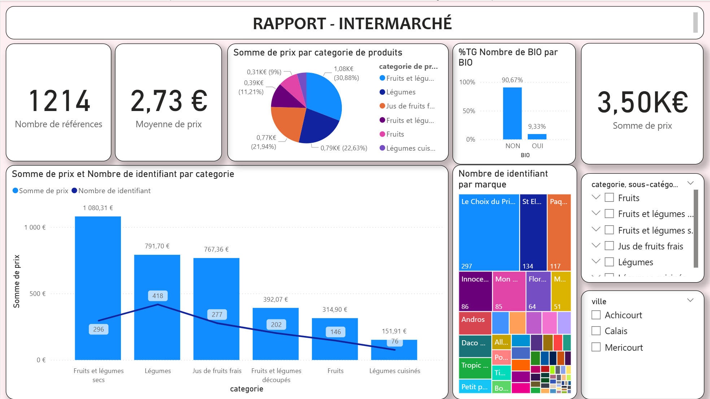
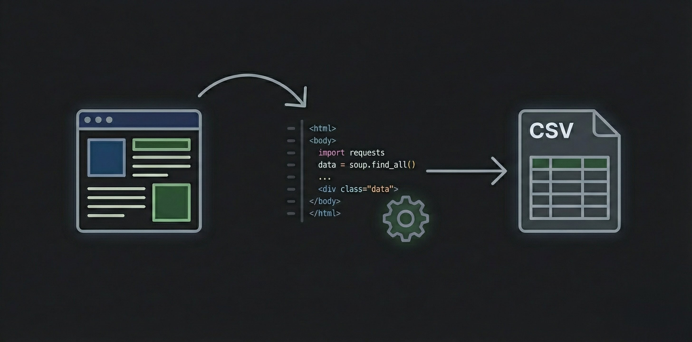

S206 - Analyse, Reporting & Datavisualisation
Projet d'études : Scraping massif du site Intermarché, nettoyage complexe des doublons et initiation au dashboard décisionnel.
Voir le projetActuellement en BUT, j'apprends à automatiser le traitement des données et à construire des tableaux de bord interactifs pour faciliter la prise de décision (Python, SQL, Power BI).
SELECT * FROM Etudiants
WHERE prenom = 'Karim'
AND formation = 'BUT SD'
AND skills IN (
'SQL', 'Python',
'ETL', 'DataViz'
);Au-delà de mon attrait pour l'architecture des données, mon parcours étudiant est marqué par un fort engagement associatif, ma passion pour le football et un grand attrait pour les voyages. Je suis convaincu qu'un bon projet Data nécessite autant de rigueur technique que d'ouverture d'esprit.
Président de l'association étudiante de l'IUT. Coordination d'équipes et gestion de projets étudiants.
Ambassadeur Jeune pour la ville de Méricourt. Échanges culturels et accueil de délégations internationales.

Projet d'études : Scraping massif du site Intermarché, nettoyage complexe des doublons et initiation au dashboard décisionnel.
Voir le projet
Création d'un script de scraping avec Playwright et Pandas pour extraire et structurer les données d'un site e-commerce.
Voir le projet